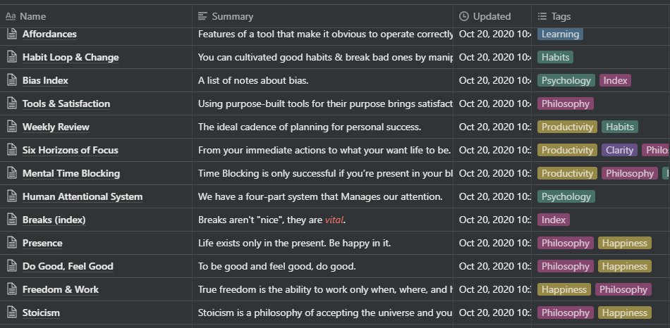
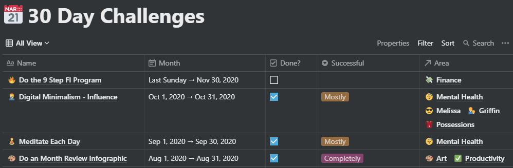
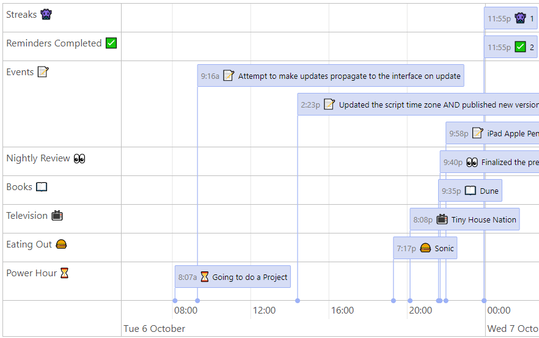
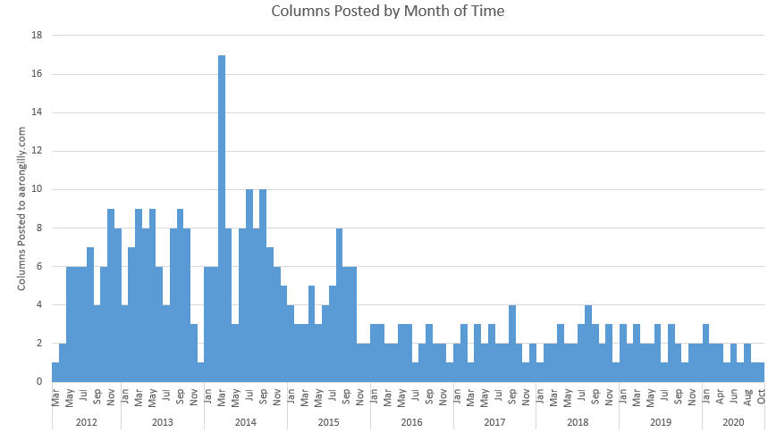

Four Hundred Celebration
This is Column #4001. Some might say “I can’t believe I’ve made it this far”, but not me. I enjoy doing it, therefore I haven’t stopped. What I have done is change my mind several times. The Column has grown and evolved over the past 399 entries. I switched platforms. I changed formats, somewhat. There are a lot of tweaks I want to make to my first 399 posts:
- Changing the URL of each to simply refer to the Column number, not the number & title
- Changing the tags to better reflect what I wound up writing about over the past 8 years
- Cleaning the garbage html that Blogger imposed on my stuff
- Fixing broken links (where possible)
There’s no time like the present. I’m going to make those tweaks over the next several months. You won’t notice. Nobody will appreciate the results of the effort but me… and I’m 100% okay with that.
Aaron Talks Politics
I’m going to do something here that I promised myself I’d never do on my blog.
Just for a second. I promise.
As I write this, it’s been about 6 hours since Joe Biden has been projected to take over as president of the United States come January 2021. I’ll speak for myself (and I think the majority individuals from all over the world) when I say “thank God”. Thank God not because of any shift in political policies or positions, but because we’ll once again have a President that feels beholden to facts. We will have a President who doesn’t feel entitled to do and say whatever he feels - regardless of objective reality - damned be the consequences. We’ll have a President who cares more about the country than his image. One who’d rather lose than try to split the country and call into question the results of the election.
Donald Trump (both the man and the fact that nearly half the country wanted him as President) shook my worldview in a way I may never fully be able to reconcile. Thank God I get to start trying sooner rather than later.
The last political thing I’ll ever say on here (until I break this promise to myself again):
I followed this election intentionally using a variety of news sources. I used those attempting-to-be-centrist, to the liberal-leaning, to the conservative-leaning… and I have seen such a different picture of the world painted in each. Worse than that, I’ve ventured into comment sections and found random internet people treating this amorphous group of “others” from the opposing political party like they are the worst possible people. They regard the other side as some sort of caricature of ignorance and/or malice. This is unapologetically naive, on both sides of the aisle.
As we leave the front pages in bed
With the war raging on in our heads
I could write a swath of humanity off
’cause of something that I just read
But I don’t want to fight fire with fire
And I don’t want to preach to the choir
Giving just as much hell as I get
To people I’d prob’ly like if I met
Chris Thile, in “I Made This For You”
Let’s all try to see each other’s perspective. Seek first to understand, then be understood. Donald never came close to this. To be fair to him (which is something he doesn’t deserve) most political conversations fail to meet this standard. We surround ourselves with facts or analyses thereof that are a subset of the actual reality, which are congruent with our existing perspectives of the world. Conversations between the conservative and the liberal are doomed without a shared understanding that the world the other person sees is quite likely very different from the world as they see it. Moreover, how you feel about hot-button issues is more often than not dictated by your gut, rather than your brain. Reasoned arguments don’t have a chance to get everyone to meet each other on common ground. Empathy does.
To make progress, we must stop treating our opponents as our enemy. We are not enemies. We are Americans.Joe Biden, in his first speech as president-elect
Life Update for Posterity
I am now the father of two. My little guy has an even littler guy to call his brother. Now I’ve got two little guys and a beautiful woman that I am lucky enough to have in my life. And my two cats are okay.
I’m working to seek the new balance going forward. I mean that both philosophically and also in terms of shoes, because I’m a dad twice-over now and I think New Balance shoes are part of that uniform..
Top 5: Longest Running Personal Projects of Mine
5. Gillespedia & my Notes database
The first note from my (public) Notion “Notes” database was created on 3/3/2020. It spun up from a different project which split out into a public Notion database full of atomic notes about various topics, and the Gillespedia section of this blog. Gillespedia has grown to 12 entries (behind where I’d like it to be, admittedly) whereas the Notes database just crossed over 450 interconnected notes (about on par with where I’d like it).

See the 30 Day Challenge “Atomize & Transition Gillespedia” from April 2020, where I started this project.
4. 30 Day Challenges
The first 30 Day Challenge I undertook was a “bulking” challenge in October 2013. After that, I took a couple months off. Since January 2014 I’ve had a new challenge2 every month3 that have added variety and opportunity into my life.

See the Data Journal entry for 1/1/2014 where I wrote “Started a Paleo(ish) diet” and started this project.
3. The Life Tracker Data Journal
The first row from my Data Journal is from April 22nd, 2013. It’s a unified journal, with a (non-exclusive) focus on quantified-self data. For the first few years of tracking it was sensitive to missing data. Since 6/22/2015 I haven’t missed a day of tracking at least some data.

See Second-a-Day video clip for April 3rd, 2013?t=310) in which you see me writing code for this project.
2. Second-A-Day Videos
The first shot from my first Second-a-Day video was 8/1/2012. Since that time, I’ve captured and spliced together one second from each of the next 2,929 days into a series of YouTube videos.
See Column #23 in which I wrote for the first time about starting this project.
1. This Blog

While that histogram is clearly left-skewed, there’s no total drop-off. Also having gone back and reviewed a lot of my prior work, the lower frequency from the past few years ties to higher quality. The Column, like everything else in my life lately, is tuned into one of my prime philosophies: Less, but Better.
Notice how each of those Projects is referenced in the one that came before it? That’s synergy.
Quotes
An expert is a person who has found out by painful experience all the mistakes that one can make in a very narrow field. Niels Bohr
Footnotes
-
This is actually closer to Column #1000 than 400, but the first many hundred Columns I’ve written in my life are (gratefully) lost to time. They were the incoherent ramblings of a boy. These are the incoherent ramblings of a man. ↩
-
Technically I’ve done some challenges twice - a bulking challenge, a “Digital Minimalism” challenge, etc. ↩
-
This is also false. In 2016 I attempted to do 12 different challenge all year instead of rotating one a month each month (that failed) and in 2018 I held a “30 Day Challenge” of “No Zero” out for the majority of the year before starting unique challenges again in January 2019. ↩